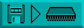

As soon as you click on this Disc Operation icon, it reappears at the top left-hand
corner of the screen, and five new icons are revealed along the top of the screen.
From left to right, they perform the following wonders:
As soon as you click on this Disc Operation icon, it reappears at the top left-hand
corner of the screen, and five new icons are revealed along the top of the screen.
From left to right, they perform the following wonders:EDIT WINDOW
Like the Zoom Window, this is a work area. The mouse pointer changes to a cross when inside
either the Zoom or the Edit Window, and drawing operations will have the same result in both
windows no matter which one is being used.
VERTICAL ZOOM
On the right-hand edge of the Edit Window is a vertical slider bar. This indicates other available
areas of the image when the Zoom Window is unable to show the whole of what is inside the
Edit Window. By moving this slider up and down, the hidden areas may be displayed in the
Zoom Window.
HORIZONTAL ZOOM
This has the same function and operation as the Vertical Zoom, and moves the display
horizontally. The Horizontal Zoom slider is to be found at the bottom of the Edit Window.
OBJECT SIZER
The last feature of the Edit Screen takes up the smallest space on the screen, and it can be found
in the bottom right-hand corner of the Edit Window, where the vertical and horizontal sliders
meet. If you look at the Information Line, the size of the current image will be displayed there.
To change the size of an image, lock the mouse pointer on the small square Sizer gadget, and
drag it to a new position. The maximum sizes of Sprites, Bobs, Blocks and Icons are all detailed
in their appropriate Chapters, but boundaries should generally be kept as tight as possible, to
save memory.
Major Options
Here is a guided tour of all the Major Options featured in the Object Editor, as they appear from
left to right along the top line of the Main Menu. Please try out each option as it is explained, by
clicking the left mouse button on the appropriate icon. This will take you to the option's Sub
Menu.
You can return to the Main Menu at any time, by clicking the left mouse button on the menu title icon, at the top left-hand corner of the screen, or by clicking the right mouse button anywhere along the top line of icons. For most other operations please use the left button, unless instructed otherwise.
Disc Operations
As soon as you click on this Disc Operation icon, it reappears at the top left-hand
corner of the screen, and five new icons are revealed along the top of the screen.
From left to right, they perform the following wonders:
Load New Bank from Disc

This prepares the Object Editor for loading a new range of images into the
Object bank. A series of messages is provided in the Information Line, to
assist you in making the right decisions. If the "Bobs.Abk" file is ready to be
accessed, click on this icon and then trigger the [YES] option.